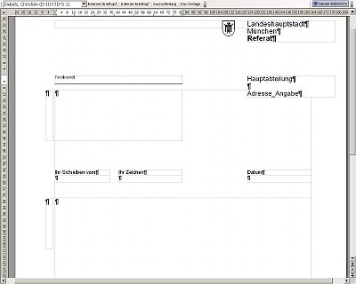
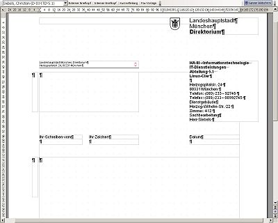
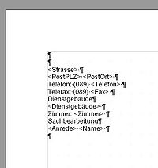

Dieser Artikel beschreibt anhand eines Beispiels die Erstellung eigener Vorlagen bzw. die Anpassung bestehender Vorlagen basierend auf der Seite Textfragmente im WollMux, die auch ausführliche Informationen zum neuen Konzept der sog. "Textfragmente" enthält, die der WollMux unterstützt.
Als Beispiel dient die Vorlage für den externen Briefkopf, die für den Wollmux neu - nach dem Visuellen Erscheinungsbild der Landeshauptstadt München - erstellt wurde. Hinweise zur Gestaltung des Briefkopfes sind im Leitfaden zum Dokumentenaustausch zu finden. Deshalb geht der Artikel nur auf die Einbindung der entsprechenden Daten über Textfragmente in vorhandenden oder neu erstellten Vorlagen ein.
Weitere Dokumentationen
Hinweise zu den weiteren Dokumentationen zum Wollmux und zum Briefkopf bzw. Formularsystem und welche davon sie für welche Fragestellung benötigen, erfahren Sie im Wegweiser.
Aufbau des externen Briefkopfs
Der Briefkopf wurde so erstellt, dass er möglichst flexibel für Anpassungen von Inhalten ist. Alle Inhalte (bis auf den Schriftzug "Landeshaupstadt München") werden über Textfragmente, bzw. bei der Referatsbezeichnung über eine Textmarke, die auf eine Datenbank verweist eingefügt. Die Vorlage besteht daher eigentlich überwiegend aus leeren Rahmen, die die Textmarken enthalten. Die Textmarken werden beim Generieren des Dokuments durch die Daten (aus verschiedenen Datenquellen) ersetzt. Der grösste Teil des Inhalts kommt dabei aus dem LDAP, Teile der Daten kommen aber auch aus anderen Datenquellen, z.B. kommen die ÖPNV Verbindungen aus Textdateien.
Abbildung 1 zeigt die Briefkopfvorlage mit den Textmarken.
Abbildung 2 zeigt dann das daraus erzeugte fertige mit Daten versehene Dokument.

Abbildung 1

Abbildung 2
Die Textmarken verweisen auf andere Vorlagen, über die der Briefkopf dann befüllt wird. Der Briefkopf besteht somit eigentlich aus mehreren Vorlagen, wobei die Vorlage mit dem Layout des Briefkopfes die "Mastervorlage" ist. Der Gedanke dahinter ist, dass das Masterdokument für alle Referate gleich bleibt und nicht anpepasst werden muss. Die Änderungen, die in den Referaten erforderlich sind, sollen über Veränderungen in den Textfragmenten vorgenommen werden können. Dadurch wird verhindert, dass es viele - teils unterschiedliche - Briefkopfvorlagen für eigentlich einen Externen Briefkopf gibt. Sollten Änderungen am Layout nötig sein, muss dies nur einmal zentral gemacht werden.
In den nächsten Kapiteln werden die zwei Möglichkeiten beschrieben, wie die Textmarken im Masterdokument aufgebaut sind, um die Daten entweder direkt oder über Textfragmente einzufügen.
Direkte Einbindung von Datenfeldern
Im Externen Briefkopf wird nur der Referatsname mit einem direkten Verweis auf die Datenquelle eingefügt. Dies konnte so gelöst werden, da davon auszugehen ist, dass sich im Bereich des Referatsnamens keine Änderungen bzgl. des Erscheinungsbildes (bzw. der Formatierung) ergeben werden. Ist dies nicht sicher, eignen sich Textfragmente besser, da sie wesentlich flexibler angepasst werden können. Nur beim direkten Einfügen von Werten über Textmarken wird die Formatierung direkt im "Masterdokument" vorgenommen.
Die Textmarke sieht folgendermassen aus:
WM(CMD 'insertValue' DB_SPALTE 'Referat')
Die Beschreibung zum Aufbau der Textmarke ist im Artikel Dokumentkommandos des Wollmux zu finden. Im Externen Briefkopf wird mit dieser Textmarke automatisch das zum aktuellen Absender passende Referat eingefügt.
Die Textmarken, die auf Datenquellen verweisen, sind ebenfalls in den Textfragmenten zu finden; die Textfragmente fassen zusammengehörende Datenfelder für bestimmte Rahmen im Briefkopf, z.B. Absenderdaten zusammen und erleichtern somit die Anpassung der Briefkopfdaten.
Wie die Abbildung der Daten des LDAP auf die im BKS verwendete Spaltenstruktur erfolgt, sieht man hier.
Erstellung von Textfragmenten
Die Erstellung von Textfragementen ist denkbar einfach. Sie ersetzen die direkte Einbindung von Datenfeldern, indem sie zusammengehörende Werte quasi in andere Vorlagen (Textfragmente) auslagern. Dies gewährleistet eine hohe Flexibilität im Bezug auf Anpassung von Formatierungen und Anpassung/Ergänzung von Werten. Ein Beispiel für den Aufbau eines Textfragment sieht man in Abbildung 3.

Abbildung 3
Aufbau des Textfragments:
- in diesem Beispiel ist die erste Leerzeile für die Leerzeile zwischen der Angabe zur Hauptabteilung und den restlichen Adressangaben
- bevor die Auflistung der Platzhalter beginnt, ist immer eine Leerzeile nötig, genauso am Ende des Textfragments, werden diese weggelassen, kann es passieren, dass die erste oder letzte Zeile des Fragements im Masterdokument falsch formatiert wird.
- in diesem Beispiel sind die Platzhalter zur besseren Unterscheidung immer mit "<...>" gekennzeichnet
- damit die Darstellung auch unter MS Word noch passt, ist am Ende jeder Zeilen nach der letzten Textmarke ein Leerzeichen einzufügen, ansonsten wird der Zeilenumbruch in MS Word "verschluckt"; ab der Wollmux Version 0.96 sind keine Leerzeichen in den Vorlagen mehr erforderlich
- Die Formatierung (über Formatvorlage) erfolgt im Textfragment, allerdings sind die verwendeten Formatvorlagen ausgelagert, um sie einfacher für mehrere Vorlagen verwenden zu können. Genaueres steht weiter unten unter Hinweise und Tips
Die Textmarken entsprechen der Syntax wie sie bereits oben erwähnt ist, z.B. fügt folgende Textmarke die Strasse für die Postanschrift ein:
WM(CMD'insertValue' DB_SPALTE'Postanschrift')
Einbinden von Textfragmenten
Achtung: Dieser Punkt ist veraltet und bedarf einer Überarbeitung
Nachdem das Textfragment erstellt wurde muss es natürlich noch in das Masterdokument "eingebunden" werden. Dies geschieht wieder über Textmarken. Dazu geht man folgendermassen vor, wobei die Reihenfolge (bei 1. - 3.) nicht zwingend ist:
Im Masterdokument (bzw. in einem Textfragment) wird eine Textmarke angelegt mit folgendem Aufbau:
WM(CMD 'insertFrag' FRAG_ID 'Adresse_Angaben')Der Befehl wird in Dokumentkommandos des Wollmux erläutert.
Natürlich funktioniert das Ganze so noch nicht, da die FRAG_ID 'Adresse_Angabe' undefiniert ist. Folgender Schritt ist deshalb noch notwendig: in der Textfragmente.conf ist ein entsprechender Eintrag vorzunehmen, der der FRAG_ID eine entsprechende Datei bzw. Vorlage zuweist. In diesem Fall schaut die entsprechende Zeile in der Textfragmente.conf so aus:
(FRAG_ID "Adresse_Angaben" URL "${StadtweiteVorlagen}/WOL_Briefkopf-Fragment-Absenderadresse_v1_2005-11-21.ott")Es ist empfehlenswert die Einträge mit einem Kommentar zu versehen, da man aus dem Dateinamen nicht unbedingt erkennen kann, für was das Textfragment steht.
Die Datei muss in das Verzeichnis, auf das {StadtweiteVorlagen} verweist, gestellt werden, damit die entsprechende Auflösung über die Textfragmente.conf auch funktionieren kann.
Nach dem Vornehmen dieser Änderungen muss OpenOffice.org komplett neu gestartet werden, dazu müssen alle offenen OpenOffice Fenster und auch der Schnellstarter beendet werden.
Bei Problemen empfiehlt es sich, die Meldungen in der wollmux.log im entsprechenden Benutzerverzeichnis anzusehen.
Mischen von Dokumentinhalten und Briefköpfen
Der Wollmux ermöglicht es Inhalte von Dokumenten mit Briefköpfen zu mischen und so Briefe oder Dokumente zu erstellen, die mit aktuellen Benutzerdaten befüllt werden können. Dazu geht man folgendermaßen:
- In der WollMuxLeiste im Menü Standard im Untermenü Mischvorlagen die passende Vorlage wählen.
- Es öffnet sich ein Dokument, das im ersten Absatz einen Platzhalter enthält, z.B. "<externerBriefkopf>". Dieser ganze erste Absatz und der darauffolgende leere Absatz dürfen nicht bearbeitet werden.
Wenn Sie beim Öffnen der Mischvorlage nicht den oben erwähnten Platzhalter sehen, sondern ein kompletter Briefkopf aufgebaut wird, dann liegt ein Fehler vor. Generell ist es so, dass Sie beim Bearbeiten einer Vorlage niemals Sachbearbeiterdaten sehen sollten. Wenn Sie einen Briefkopf mit Sachbearbeiterdaten sehen, so werden diese beim nächsten Speichern fest in das Dokument integriert. Der WollMux kann solche Vorlagen nicht mit neuen Sachbearbeiterdaten befüllen. Das Mischprinzip wird dadurch ausgehebelt. Dies sollte unbedingt vermieden werden.
- Fügen Sie nun anstelle des Erklärungstextes Ihren gewünschten Text für die Vorlage ein.
- Speichern Sie die Vorlage nun:
.ott
Wählen Sie beim Speichern unbedingt den Typ "OpenDocument Textdokumentvorlage (*.ott)"
- Wenn Sie jetzt die Vorlage normal durch Doppelklick im Dateimanager öffnen, erhalten Sie einen ausgefüllten Briefkopf mit dem von Ihnen eingefügten Text. Als Absender wird immer der in der Wollmux Kommandozentrale eingestellte Absender verwendet.
- Falls gewünscht kann die Vorlage in ein Menü der WollMux-Leiste eingepflegt werden.
Hinweise und Tips
Grafiken und Text in der Fusszeile
Viele Dienststellen verwenden in der Fusszeile ihres externen Briefkopfes Logos. Für die Fusszeilen wurden 3 Beispiele (2-, 3-, oder 4-spaltig) zur Verfügung gestellt. Die Logos können über Textfragmente an beliebiger Stelle in der Fusszeile eingefügt werden. Allerdings ist zu beachten, dass Grafiken und Text möglichst nicht in einer Spalte stehen sollten, da die Formatierung des Textes (insb. der ersten Zeile) verloren geht. Am besten legt man das Logo in eine eigene kleine Spalte, die in jede der Fusszeilen(-spalten) eingefügt werden kann.
Formatvorlagen
Wie oben schon erwähnt, befinden sich die in den Textfragmenten verwendeten Formatvorlagen in separaten Vorlagendateien. Dies erleichtert es die gleichen Formatvorlagen in allen Textfragmente und Briefkopfvorlagen zu verwenden. Die Vorlage mit den "ausgelagerten" Formatvorlagen wird genauso wie die Textfragmente über eine Textmarke in die "Mastervorlage" eingefügt. Damit stehen dort alle Formatvorlagen zur Verfügung.
Einige Punkte gibt es dabei zu beachten:
- Die Formatvorlage "Standard" darf nicht in Vorlagen und auch nicht als Basis für Verknüpfungen verwendet werden. Statt dessen kann für normalen Fließtext die Formatvorlage "Fließtext" benutzt werden.
- Es dürfen in der Mastervorlage keine Formatvorlagen mit gleichen Namen, wie die einzufügenden Formatvorlagen verwendet werden. Eine "Überschreibung" der Werte der bereits vorhandenen Formatvorlagen mit neu eingefügten ist nicht möglich.
- Die Textmarke für die Vorlagendatei muss möglichst am Anfang der Mastervorlage vor der ersten Textmarke, die auf ein Textfragment verweist, eingefügt werden. Im externen Briefkopf steht die Textmarke vor dem "L" von "Landeshauptstadt München". Auf das Layout des Briefkopfs hat dies keine Auswirkung.
- Die Formatvorlagen für vorgegebenen Text oder für Textmarken, die direkt auf Datenquellen verweisen, müssen sich logischerweise in der "Mastervorlage" befinden, damit sie verwendet werden. Es schadet nicht, wenn die Formatvorlagen mit gleichen Namen mittels der über ein Textfragment eingefügten Vorlage mit den ausgelagerten Formatvorlagen nochmals eingefügt werden, da sie nicht überschrieben werden.
Wichtig ist, dass die Formatvorlagen in den Textfragmenten den gleichen Namen wie die passende Formatvorlage in der Vorlage mit den Formatvorlagen haben. Ist dies nicht der Fall , werden beim Einfügen in die Mastervorlage die Formatvorlagen aus dem Textfragment verwendet und nicht die Formatvorlagen aus der Vorlagendatei. Es spielt keine Rolle, ob die Formatvorlagen im Textfragment nur den entsprechenden Namen oder den entsprechenden Namen mit den identischen Einstellungen haben, da beim Einfügen ins Masterdokument die Einstellungen aus der Vorlagendatei hergenommen werden.
Zweck dieses Vorgehens ist es alle Formatvorlagen an einer zentralen Stelle zu sammeln, um bei späteren Änderungen an den Formaten, diese nur an einer Stelle vornehmen zu müssen.
"Verschachtelte" Textfragmente
Es besteht natürlich auch die Möglichkeit in Textfragmenten auf andere Textfragmente zu verweisen. Im Externen Briefkopf z.B. gibt es eine Textmarke, die auf eine Textfragment "Fusszeile..." verweist. Das Textfragment "Fusszeile..." verweist wiederum auf weitere Textfragmente, die Informationen zu ÖPNV, Homepage o.ä. enthalten.
Dokumentschutz
Es gibt verschiedene Methoden, das Dokument zu schützen
- Extras/Optionen/OpenOffice.org/Sicherheit Checkbox "Dieses Dokument
schreibgeschützt öffnen" anschalten, dann wird das aktuelle Dokument
beim Speichern geschützt, so dass es beim erneuten Öffnen
schreibgeschützt geöffnet wird.
- Die Funktion betrifft nur das aktuelle Dokument (obwohl sie in Extras/Optionen steht)
- Dies funktioniert auch bei Vorlagen (dann wird das Unbenannte Dokument schreibgeschützt)
- Man kann Bereiche definieren, die auch bei schreibgeschützten Dokumenten bearbeitbar sind (nur so ergibt z.B. das Schützen von Vorlagen einen Sinn)
- Mit der Maus Text markieren und Einfügen/Bereich wählen erlaubt es, einen Bereich einzuführen, den man schützen kann. Dieser Bereich ist auch im nicht schreibgeschützten Dokument nicht beschreibbar. Wie oben erwähnt kann man umgekehrt auch Bereiche definieren, die auch in schreibgeschützten Dokumenten beschreibbar sind.